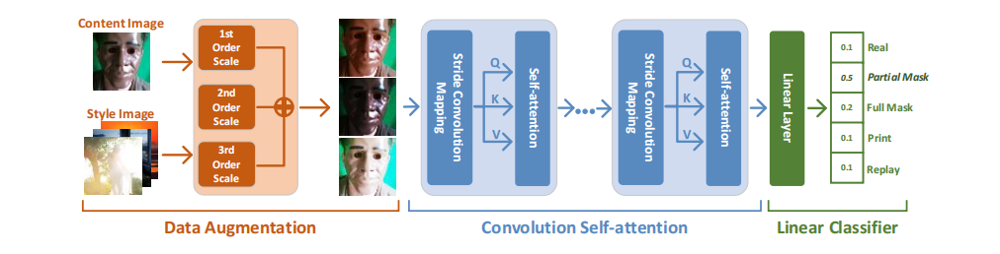
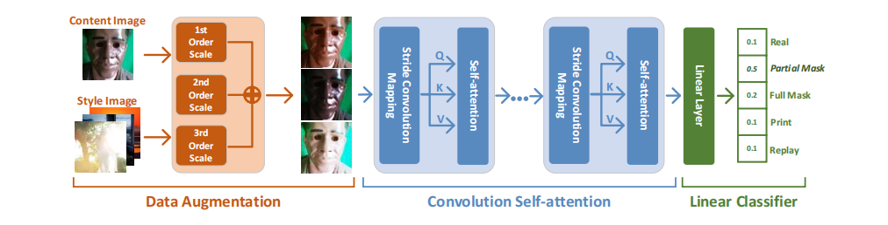

Research
深度学习技术在目前在AI
安全领域的应用较为成功。深度学习技术目前主要用于深伪取证、活体检测和模型水印等任务。深伪取证主要对深度伪造进行数据取证，其目的是检测和识别深度伪造数据，使用深度神经网络能够有效的对深度伪造进行数据取证。活体检测主要目的是检测和识别真实的活体目标，而深度神经网络则能够较为准确的识别真实的活体目标的特征和行为。模型水印是指在
AI 系统中嵌入隐藏的信息，以证明该系统的真实性和可靠性，深度学习技术可以有效的解决这个任务，其可以用于生成具有鲁棒性的水印图像，并将其嵌入到 AI 系统中。
来源取证（Source
Attribution）是计算机科学和法律领域中的一个重要研究方向，旨在通过技术手段和法律手段来确定数字证据的来源和可信度，以解决涉及计算机犯罪、网络欺诈、知识产权侵犯等问题。来源取证的研究具有重要的实际应用价值。在数字时代，各种数字证据被广泛应用于法律案件、安全调查、商业纠纷等领域。通过来源取证的研究，可以更加有效地确定数字证据的真实性和可信度，从而为解决各种涉及数字证据的问题提供有力的支持。同时，来源取证的研究也有助于推动相关法律法规和标准规范的制定和完善，提高数字证据的法律效力和可信度。
深度学习在篡改检测领域的研究方向涉及多种技术和方法，包括卷积神经网络、循环神经网络、生成对抗网络等。这些技术和方法可以帮助研究者更加准确地检测图像和视频是否被篡改或伪造，从而为数字取证和安全领域提供有力的支持。同时，深度学习在篡改检测领域的研究也需要考虑数据收集、模型训练、实验评估等方面的问题，以及如何应对各种类型的篡改和伪造攻击。


深度学习技术在信息隐藏领域的应用也越来越广泛。例如，深度学习技术可以用于密文定位、鲁棒隐写和可逆隐藏等任务。密文定位其主要目的是在加密的数据中找到隐藏的信息，而深度学习技术可以用于解决这个任务，例如使用深度神经网络来提取密文中的特征，从而定位隐藏的信息。鲁棒隐写其主要目的则是在不影响原始图像的前提下将信息隐藏在图像中，例如使用深度神经网络来生成鲁棒的隐写图像。可逆隐藏则是在不损害原始数据的前提下将信息隐藏在数据中，例如使用深度神经网络来生成可逆的隐藏图像。
AI security


Abstract
随着计算机硬件设备和深度学习技术的不断发展，人们更容易通过目前新出现的多媒体篡改工具（如最流行的deepfake）来调换视频中的人脸。这将带来一系列新的安全威胁。尽管许多取证研究已经关注了这种新型的篡改行为并取得了较高的检测精度，但大多数研究都是基于监督学习机制，需要大量的标注样本进行训练。在本文中，我们首先开发了一种新型的无监督检测方式来识别深度伪造视频。我们提出的方法背后的主要基础是真实视频中的人脸区域是由摄像头拍摄的，而深度伪造视频中的人脸区域通常是由计算机生成的，两个视频的来源完全不同。具体来说，我们的方法包括基于光响应不均匀性（PRNU）和噪声指纹特征的两个聚类阶段。首先，提取每帧视频的PRNU指纹，用于聚类全尺寸相同的源视频（无论真假）。其次，我们提取视频中人脸区域的噪点，用于识别（二元分类时重新聚类）每个聚类中的深度伪样本。数值实验验证了我们提出的无监督方法在我们自己的数据集和基准FF++数据集上表现非常好。更重要的是，它的性能与基于监督的最先进的检测器不相上下。AI security


Abstract
随着人脸识别技术的发展，人脸防欺骗作为人脸识别系统中最重要的安全模块变得越来越重要。事实上，人脸防欺骗仍然是一项具有挑战性的任务，尤其是同时面对多种攻击。此外，目前大多数检测器主要关注二进制分类，而通常无法完成细粒度的多重分类任务，即重放攻击、打印攻击、部分掩码攻击和完全掩码攻击。为了填补这一空白，本文提出设计细粒度的检测网络对各种人脸欺骗攻击模式进行分类。首先，我们提出建立一个Transformer风格的特征提取网络结构，采用卷积映射操作代替传统的线性映射。具体来说，我们采用自注意模块来提取长距离特征，并使用卷积映射来保持模型提取局部特征的能力。最后，引入简单有效的线性分类器进行细粒度分类。此外，借助基于VGG的风格转换网络，提出了精心设计的数据增强模块方案，解决了训练样本不足的问题。在大规模实验中，与基线检测器相比，我们提出的低计算成本的细粒度分类器在多重分类中表现出其优越性。AI security
Abstract
最近，生成式对抗网络（GAN）生成的图像在社交网络中广泛传播，这给媒体取证界带来了新的挑战。尽管一些可靠的取证工具已经推进了对GAN生成图像的检测研究，但面对恶意的后处理攻击，特别是在实际的社交网络场景中，其检测精度无法得到保证。因此，针对这一问题，我们提出了一种精心设计的深度神经网络，该网络具有手工创建的特征。特别是，依靠跨色空间共生矩阵（Cross-color Spatial Co-occurrence Matrix，CSCM），在仔细分析和选择最有效的颜色通道后，提取出具有区分性的特征。然后，将融合后的特征输入深度中性网络，训练出高效的法证检测器。广泛的实验结果验证了在大多数检测场景中，我们提出的检测器的性能优于先前的技术，特别是在后处理攻击的情况下。此外，我们还强调了所提出的检测器与现实社交网络平台的相关性，以及它在三种不同场景下的泛化能力。AI security
 


Abstract
随着深度学习的发展，以DeepFake为代表的人工智能合成技术在互联网上广泛传播。尽管许多先进的检测方法已经能够获得良好的检测性能，但大多数基于数据驱动训练的神经网络模型在特征提取和分析过程中缺乏可解释性。在本研究中，我们提出了一种基于多色通道人脸纹理差异的可解释DeepFake视频检测方法。我们观察到DeepFake视频中的人脸区域看起来比真实视频中的人脸区域更平滑。首先，我们分析了真假帧在每个颜色通道中的统计差异。其次，提出利用共生矩阵构建一组低维特征来区分真实视频和DeepFake视频。同时，我们在基准测试中评估了视频级和帧级的检测性能，该方法在FaceForensics++上的AUC值为0.996，在Celeb-DF上的AUC值为0.718。我们提出的方法的性能明显优于传统的基于机器学习的检测器，也可与当前一些基于深度学习的检测器相媲美。更重要的是，我们提出的方法在面对压缩攻击时是鲁棒的，并且与现有的基于深度学习的方法相比更省时。Source attribution

Abstract
为了解决查询图像的相机来源识别问题，已经提出了许多取证方法。然而，由于查询图像的计算开销较大，且存在隐私泄露的潜在威胁，使得许多现有的取证方法适用性不强。只有少数研究工作针对上述问题提出了安全的取证方法，但是他们并没有对统计性能进行详细的分析。在本文中，我们提出了一种有效的保护隐私的取证方法，并对其统计性能进行了分析，以有效、安全地解决摄像机模型识别问题。为了保护查询图像的隐私，我们提出了一种混合隐私保护方案，包括两种操作： 为了保护查询图像的隐私，我们提出了一种混合隐私保护方案，该方案由两种操作组成：位置扰码加密以保护图像内容的隐私，噪声线性映射处理以保护查询图像的摄像机模型身份的隐私。在加密域中，我们首先提出了一种新的统计噪声模型，它可以准确地描述加密的JPEG查询图像。然后，设计了一种基于噪声模型的检测器来识别不同的相机模型。实验结果从隐私保护和取证效果两方面验证了我们提出的方法的可行性，并报告说我们的方法优于最先进的安全取证方法，特别是当用于估计相机指纹的样本图像不充分时，例如只有2幅可用图像。Source attribution


Abstract
计算机生成的图像（CG）已逐渐在互联网上泛滥，导致与真实成像设备捕获的自然图像（NI）难以区分。尽管一些鉴别器可以处理JPEG格式的NIs，但未压缩的NIs（可能在压缩前的任何成像过程中生成）和CGs之间的分类仍然是未知的。因此，本文旨在建立多种鉴别器，对NI和CG图像进行分类。我们首先描述了主要的 我们首先描述了主要的成像过程及其固有特性，这些特性描述了分类的判别特征。然后，提取残余噪声（代表内在特征），其统计分布确实有助于我们建立多重判别器，包括假设检验理论框架下的广义似然比检验（GLRT）。广泛的实验验证了我们提出的多重判别器优于许多先前的技术。此外，考虑到一些后处理攻击，鉴别器的鲁棒性也得到了验证。Source attribution


Abstract
本文旨在研究JPEG格式自然图像的源相机设备识别问题。我们提出了一个改进的依赖于信号的噪声模型来描述JPEG图像像素的统计分布。该噪声模型依赖于将像素噪声方差与期望值视为唯一fifingerprints的异方差噪声参数。本文还表明，像素的非线性响应可以通过表征线性关系来捕捉，因为这些异速参数用于识别源相机设备。识别问题被置于假设检验理论的框架内。在所有模型参数完全已知的理想情况下，提出了似然比检验（LRT），并从理论上确定了其性能。似然比检验的统计性能是检测能力的上限。在实际识别中，当参数未知时，建立了两种基于参数估计的广义似然比检验。在模拟数据和真实自然图像上的数值结果突出了我们提出的方法的相关性。虽然这些结果表明该方法的概念得到了初步验证，但仍需对其进行扩展，以便与基于PRNU的方法进行相关比较，因为PRNU方法得益于多年的经验。Tampering detection

Abstract
重新采样图像的验证问题已经研究了很多年。然而，目前很少有研究提出基于统计模型的检测方法，导致无法全面分析重采样检测器的统计性能。为了填补这一空白，我们利用参数模型来揭示重采样伪造的蛛丝马迹，该模型用残余噪声的分布来描述。随后，我们提出了一个描述来自重采样图像的残余噪声的统计模型。然后，将检测问题置于假设检验理论的框架中。通过设计纹理权重图来考虑图像内容，建立了两种类型的统计检测器。在所有分布参数完全已知的理想情况下，提出了似然比检验（LRT），并从理论上确定了其性能。根据似然比检验的统计性能，可以成功获得检测能力的上限。在实际应用中，当分布参数未知时，建立了基于参数估计的三种不同映射的广义似然比检验。在模拟数据和真实自然图像上的数值结果凸显了我们提出的方法的相关性。Tampering detection

Abstract
随着图像着色技术的发展，再着色图像（RIs）变得越来越真实，使得视觉上很难与自然图像（NIs）区分开来。最近，研究人员提出了针对再着色图像的检测方法。然而，目前的检测方法仍然存在泛化能力差、训练样本规模大、训练特征维数高、计算成本高等局限性。针对这些问题，本文提出了一种基于侧向色差（LCA）不一致性及其统计差异的新方法。一般来说，RIs的LCA特征数量少于NIs，这启发我们设计区分两类图像的分类器。特别是，我们建议采用非常低的五维特征来支持经典的SVM机制。我们使用基线ImageNet和Oxford数据集来验证所提方法的有效性。Tampering detection


Abstract
为了解决图像伪造检测问题，人们提出了许多取证工具。大多数现有工具在有大量训练集的监督情况下表现高效，但其统计性能无法通过分析确定。此外，针对图像取证，特别是图像拼接伪造检测提出基于统计模型的检测器的研究有限。因此，在本文中，我们提出了一种无需训练、具有分析统计性能的拼接伪造检测器。该检测器是基于JPEG图像的简化噪声模型设计的，该模型假定像素的方差是像素期望值的二次函数。所提出的简化噪声模型有两个参数，这两个参数可以作为图像伪造检测的相机指纹。在假设检验理论的框架下，设计了一种免训练的广义似然比检验（GLRT），在规定的误报率下保证了较高的检测性能。此外，检测阈值的配置与图像内容无关。数值结果验证了简化噪声模型的准确性和所提检测器的有效性。Data hiding


Abstract
在目前的隐写分析中，依赖于大规模的样本，广泛采用的监督方案需要训练阶段，而很少有研究关注于设计一种高效率的免训练无监督自适应检测器。为了填补这一空白，我们研究了一种基于统计模型的自适应检测器，用于检测JPEG隐写术。首先，根据假设检验理论，结合量化DCT系数的分布，我们建立了基于统计模型的检测器的总体框架。其次，在此框架的基础上，主要从统计模型的选择、参数估计和较小有效载荷预测等方面分析了检测器的性能。第三，为了提高检测的可靠性，基于DCT信道的权重分配策略，提出了新型的基于统计模型的自适应检测器来检测JPEG隐写术，涉及信道选择算法和非信道选择算法。广泛的实验证明了该方法的有效性。此外，在检测两种有效载荷较小的隐写方案所采用的JPEG图像时，实验结果表明我们提出的最优自适应检测器的曲线下面积（AUC）分别高达0.9567和0.9895，均优于非自适应检测器的曲线下面积（AUC）。Data hiding


Abstract
通过最小化嵌入成本，现代自适应隐写术在不可检测性方面取得了前所未有的成功。然而，由于联合图像专家组（JPEG）的压缩，在社交网络平台上传输的图像中隐藏的秘密比特无法被完美提取，这极大地限制了其在现实世界中的广泛应用。本文通过改进掩盖元素的选择，提出了一种增强的抗JPEG压缩的鲁棒隐写算法。首先，由于JPEG压缩前后离散余弦变换（DCT）系数的符号不易改变，我们设计了基于DCT系数符号的覆盖元素。此外，借助后处理操作分析，我们成功地改进了覆盖元素的选择。其次，计算每个候选DCT系数的嵌入成本。最后，依赖于纠错算法和Syndrome-trellis编码，生成了失真最小的抗压缩隐去图像。数值结果验证了我们提出的隐写算法的鲁棒性优于现有技术；同时，该算法的有效性也在社交网络平台上得到了验证。Data hiding

Abstract
为了在现实世界中实现隐蔽通信，鲁棒隐写术引起了广泛关注。本文提出了一种基于DCT符号的鲁棒隐写术，并将其命名为Sign Steganography Revisited (SSR)。先验技术通过选择稳健的覆盖元素来确保稳健性，而数据嵌入可能会使所选元素失效。这启发了SSR在压缩前后选择不变的隐去元素，同时移除纠错编码以提高不可检测性。具体来说，所有的嵌入域都由8 × 8 DCT块表示，并进一步选择具有不变隐去元素的稳健嵌入域。因此，所选域的共享位置信息显著减少。此外，在特定的压缩范围内，理论上证明了无差错提取。此外，通过校正失真函数提高了SSR的不可检测性。实验结果表明了所提出的SSR在有损信道中的有效性；SSR的实用性也在社交网络平台上得到了验证。Data hiding